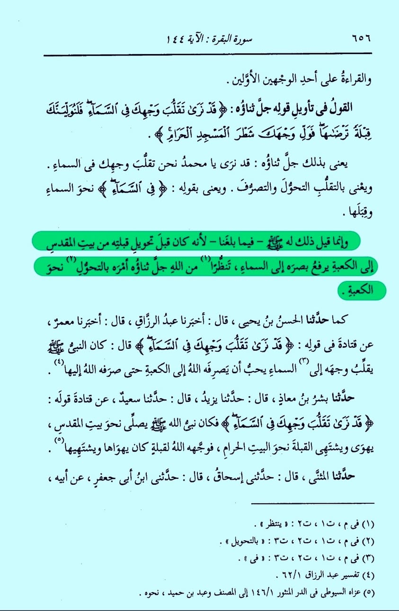

সূরা বাকারাহ এর ১৪৪ নং আয়াত ও একটি প্রশ্ন
২৬ মে, ২০২৪
সূরা বাকারাহ এর ১৪৪ নং আয়াত ও একটি প্রশ্ন—
নাবি আলাইহিস সালাম মদিনায় হিজরতের পর কিবলা পরিবর্তন হওয়া অবধি ১৭/১৮ মাস বাইতুল মাকদিসের দিকে ফিরে সালাত আদায় করেছেন। তখন আকাশের দিকে তাকিয়ে মনে মনে প্রত্যাশা করতেন যেন আল্লাহ কা'বার দিকে ফেরার নির্দেশ দেন। এ ব্যাপারে আল্লাহ বলেন—
“আকাশের দিকে বারংবার তোমার মুখ ফিরানো আমি অবশ্যই দেখছি। অতএব আমি অবশ্যই তোমাকে এমন কিবলার দিকে ফিরাব, যা তুমি পছন্দ কর।”
[বাকারাহ— ১৪৪]
প্রশ্ন হল, নাবি আলাইহিস সালাম বারবার ওপরের দিকে কেন তাকাতেন? আল্লাহ যদি ওপরে না-ই থাকবেন, তাহলে নাবির এ তাকানোর মানেটা কী; তা-ও মাসের পর মাস?
তবে কি নাবিও আমরা দেহবাদিদের(!) মতো আল্লাহ সুবহানাহু ওয়াতাআ'লাকে সাত আসমানের ওপরে আরশের ঊর্ধ্বে বিশ্বাস করতেন?
(স্ক্রিনশট তাসফিরে তাবারি ২খ খণ্ড থেকে নেয়া।)
সূরা বাকারাহ এর ১৪৪ নং আয়াত ও একটি প্রশ্ন—
নাবি আলাইহিস সালাম মদিনায় হিজরতের পর কিবলা পরিবর্তন হওয়া অবধি ১৭/১৮ মাস বাইতুল মাকদিসের দিকে ফিরে সালাত আদায় করেছেন। তখন আকাশের দিকে তাকিয়ে মনে মনে প্রত্যাশা করতেন যেন আল্লাহ কা'বার দিকে ফেরার নির্দেশ দেন। এ ব্যাপারে আল্লাহ বলেন—
“আকাশের দিকে বারংবার তোমার মুখ ফিরানো আমি অবশ্যই দেখছি। অতএব আমি অবশ্যই তোমাকে এমন কিবলার দিকে ফিরাব, যা তুমি পছন্দ কর।”
[বাকারাহ— ১৪৪]
প্রশ্ন হল, নাবি আলাইহিস সালাম বারবার ওপরের দিকে কেন তাকাতেন? আল্লাহ যদি ওপরে না-ই থাকবেন, তাহলে নাবির এ তাকানোর মানেটা কী; তা-ও মাসের পর মাস?
তবে কি নাবিও আমরা দেহবাদিদের(!) মতো আল্লাহ সুবহানাহু ওয়াতাআ'লাকে সাত আসমানের ওপরে আরশের ঊর্ধ্বে বিশ্বাস করতেন?
(স্ক্রিনশট তাসফিরে তাবারি ২খ খণ্ড থেকে নেয়া।)
